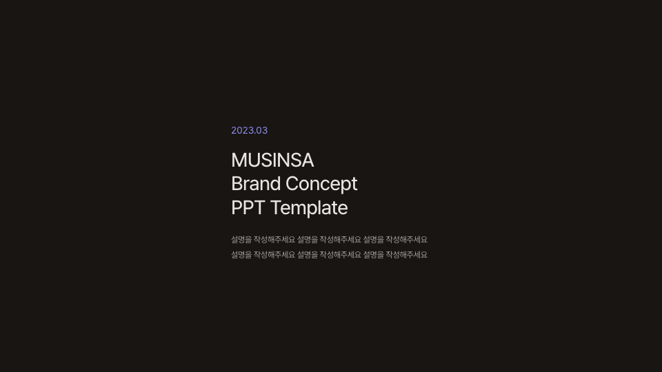
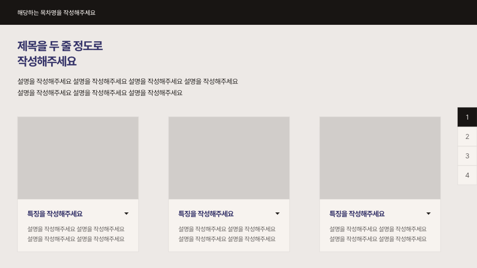
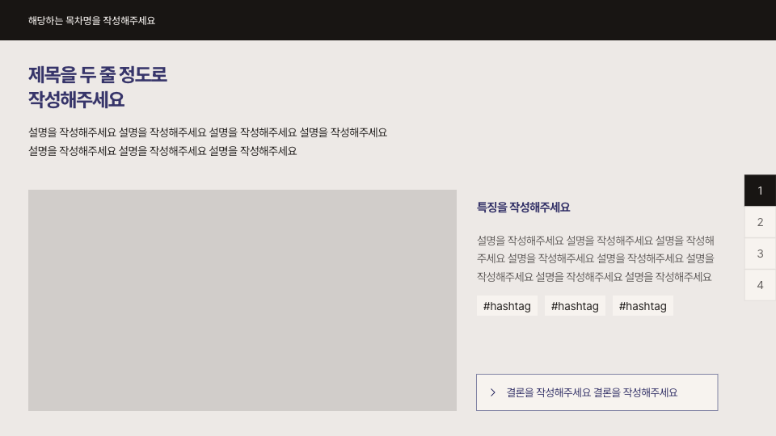
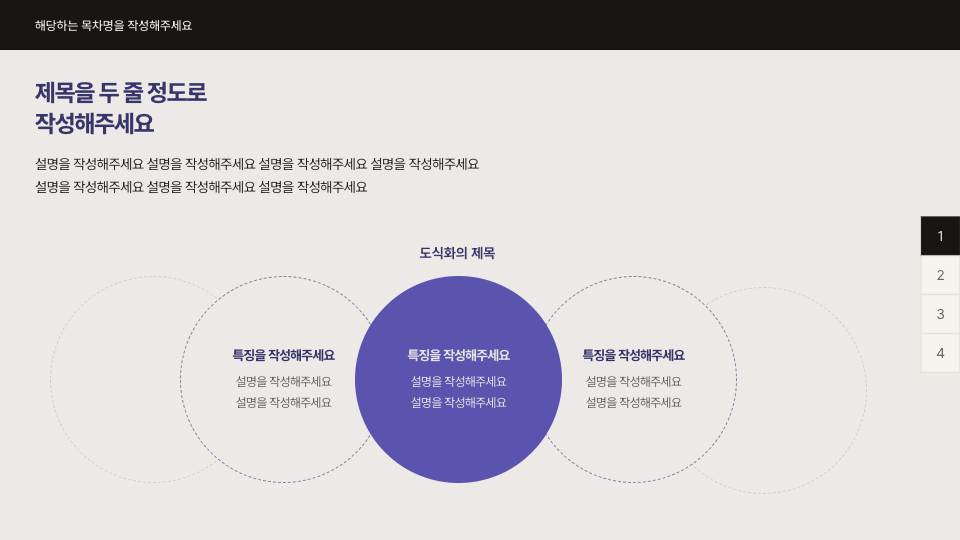
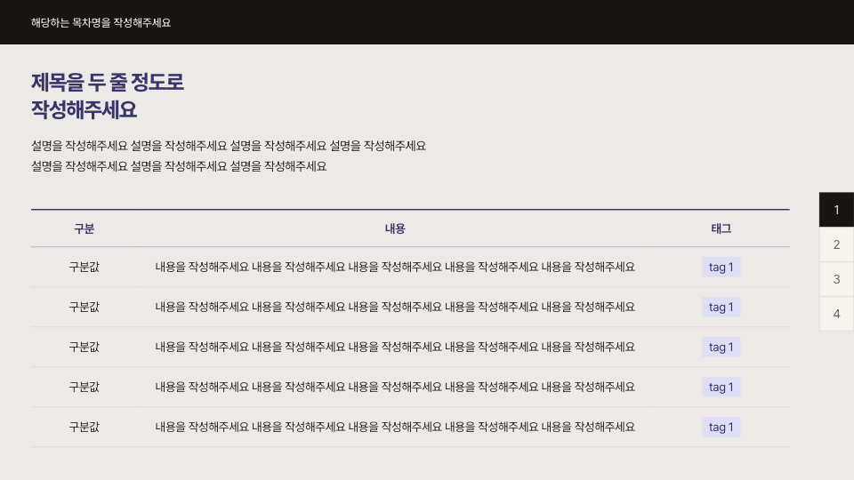
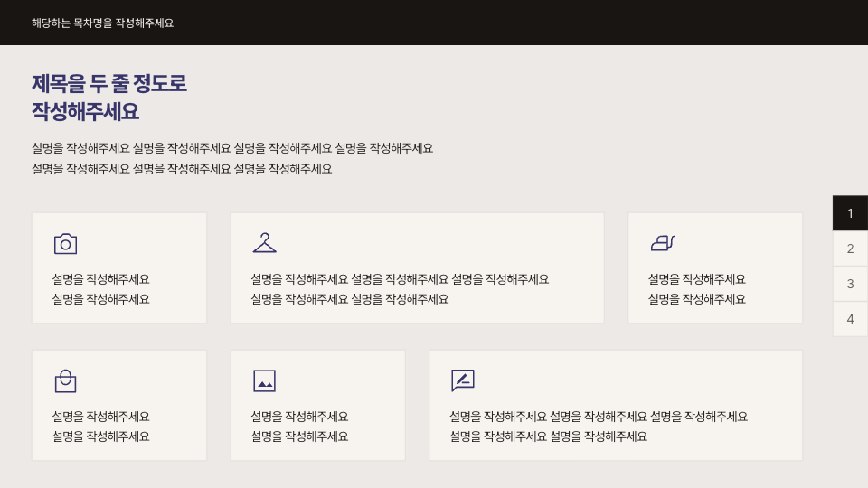
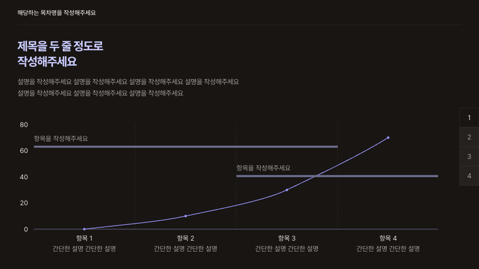
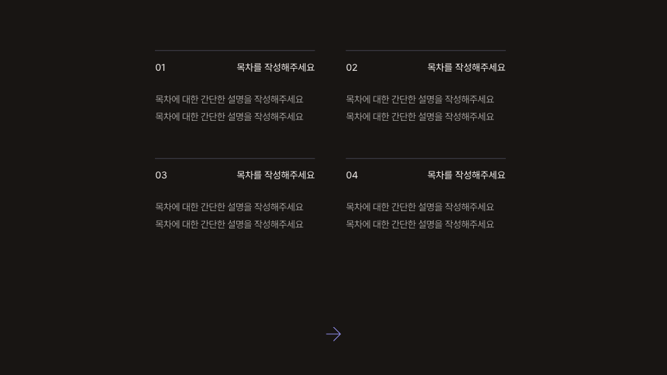

무신사 브랜드 컨셉 표지
다크 캔버스 중앙보다 오른쪽에 정렬한 날짜와 3행 영문 제목 · 다크 캔버스 중앙보다 오른쪽에 정렬한 날짜와 3행 영문 제목

이미지 카드 3열
상단 검은 목차 띠·두 줄 제목 아래 동일한 이미지 카드 3개와 우측 세로 탭 · 상단 검은 목차 띠·두 줄 제목 아래 동일한 이미지 카드 3개와 우측 세로 탭
· 화면 출처 ↗
이미지와 특징 설명
하단 왼쪽의 넓은 이미지 영역과 오른쪽 특징·본문·해시태그 3개·결론 상자 · 하단 왼쪽의 넓은 이미지 영역과 오른쪽 특징·본문·해시태그 3개·결론 상자
· 화면 출처 ↗
겹친 원형 도식
다섯 원을 가로로 겹치고 중앙 원을 채운 도식; 본문이 있는 세 원과 양끝 빈 윤곽 원 · 다섯 원을 가로로 겹치고 중앙 원을 채운 도식; 본문이 있는 세 원과 양끝 빈 윤곽 원
· 화면 출처 ↗
내용과 태그 표
구분·내용·태그의 3열과 데이터 5행을 얇은 수평선으로 구분한 표 · 구분·내용·태그의 3열과 데이터 5행을 얇은 수평선으로 구분한 표
· 화면 출처 ↗
비대칭 아이콘 카드 6개
카메라·옷걸이·다리미 / 쇼핑백·이미지·메모 아이콘을 1:2:1과 1:1:2 비율로 배치 · 카메라·옷걸이·다리미 / 쇼핑백·이미지·메모 아이콘을 1:2:1과 1:1:2 비율로 배치
· 화면 출처 ↗
상승 선 그래프와 기준 막대
다크 바탕 위 4개 표식의 상승 곡선과 높이가 다른 회색 기준 막대 2개 · 다크 바탕 위 4개 표식의 상승 곡선과 높이가 다른 회색 기준 막대 2개
· 화면 출처 ↗
네 가지 목차
다크 바탕 중앙 위쪽에 01–04 목차를 2×2로 배치하고 하단 중앙에 다음 화살표 · 다크 바탕 중앙 위쪽에 01–04 목차를 2×2로 배치하고 하단 중앙에 다음 화살표
· 화면 출처 ↗